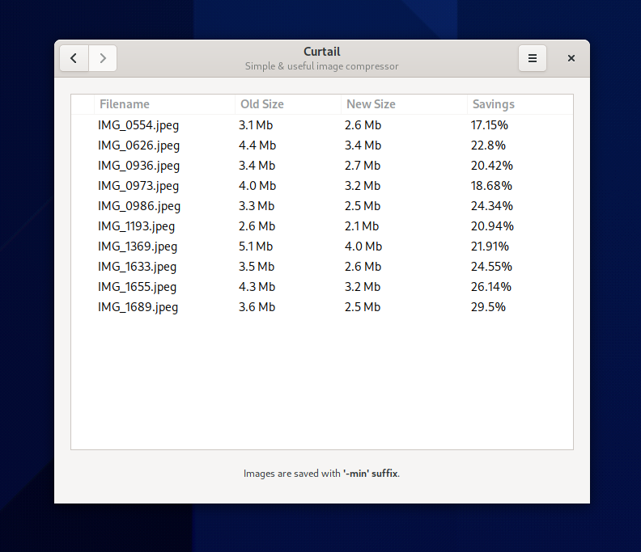

Curtail
While the app got some spotlight on GNOME Circle, I found it super handy to my own use that I decided to write about it here as well.
ImageMagick
Even though I keep forgetting syntax for everything, one of the few bash constructs I remember is the for in loop. Mainly because that’s how I repeadly convert and modify images on the command line with ImageMagick’s convert or mogrify (same but dangerously operating on the same file):
for image in *jpeg;
do
out=`basename $image .jpeg`-thumb.jpeg
convert -geometry 400 $image $out
done
Well usually on one line as:
for image in *jpeg; do out=`basename $image .jpeg`-thumb.jpeg; convert -geometry 400 $image $out; done
Curtail
Curtail’s main weapon is convention. Convention trumps configurability in my book (even if there are some preferences). Rather than making you configure a behavior, before you can do anything, it provides one. You either dig it and can immediately be productive, or you don’t and flame it on reddit and the orange site. Sorry I meant move on.

So what’s the convention? The main workflow is you drop images onto it with drag and drop and it automatically compresses the images. The only decision you have to make upfront is whether you allow it to compress it more by going lossy or not. That’s it. No selecting of output directory, scaling, formats. Nothing. Just drop images and get them processed. They will end up in the same directory as the source, with a -min suffix. Everything happens immediately and you will see a summary of the conversion in the window. It is very rare to run into such an app in the FOSS world. Thank you, Hugo.